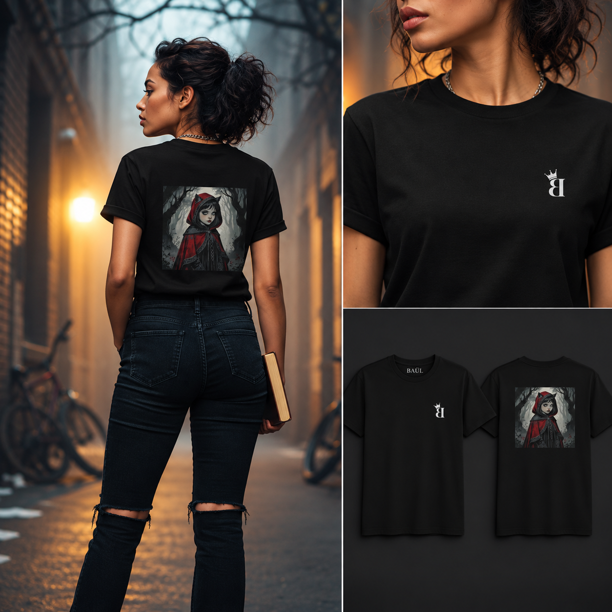
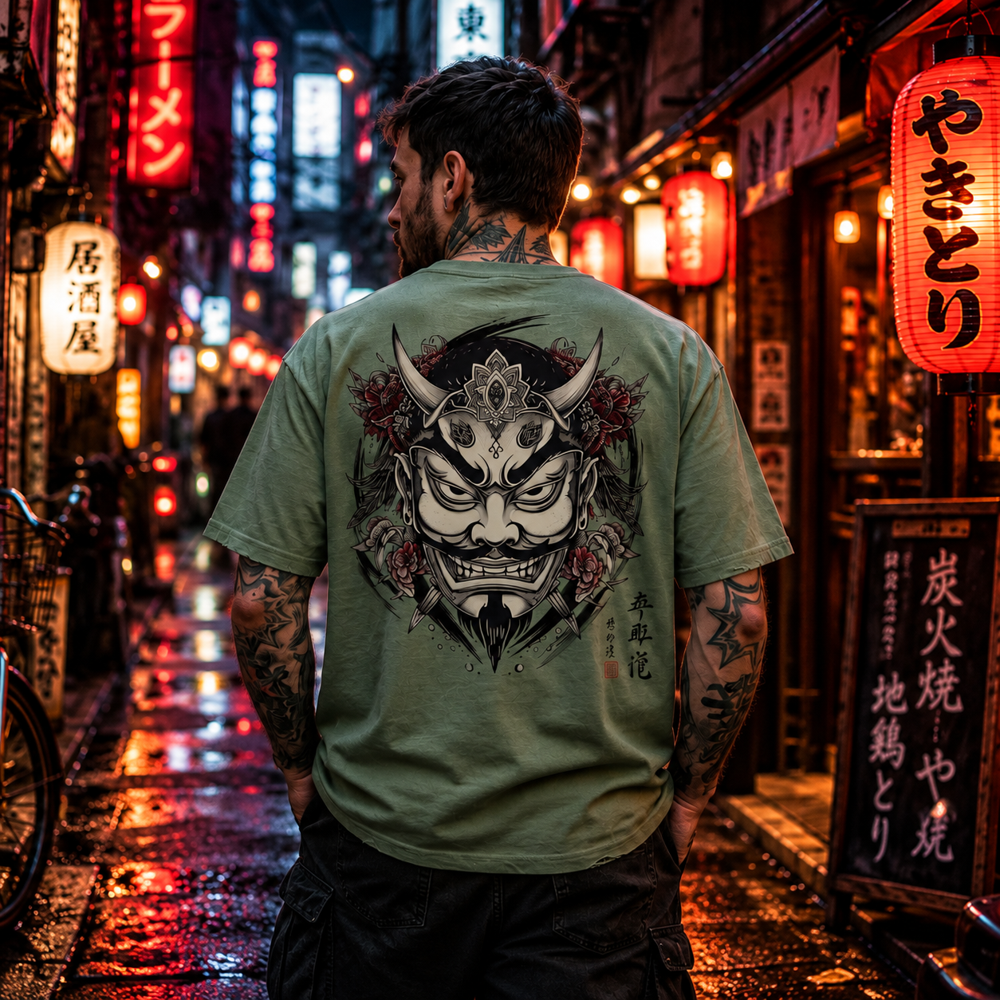
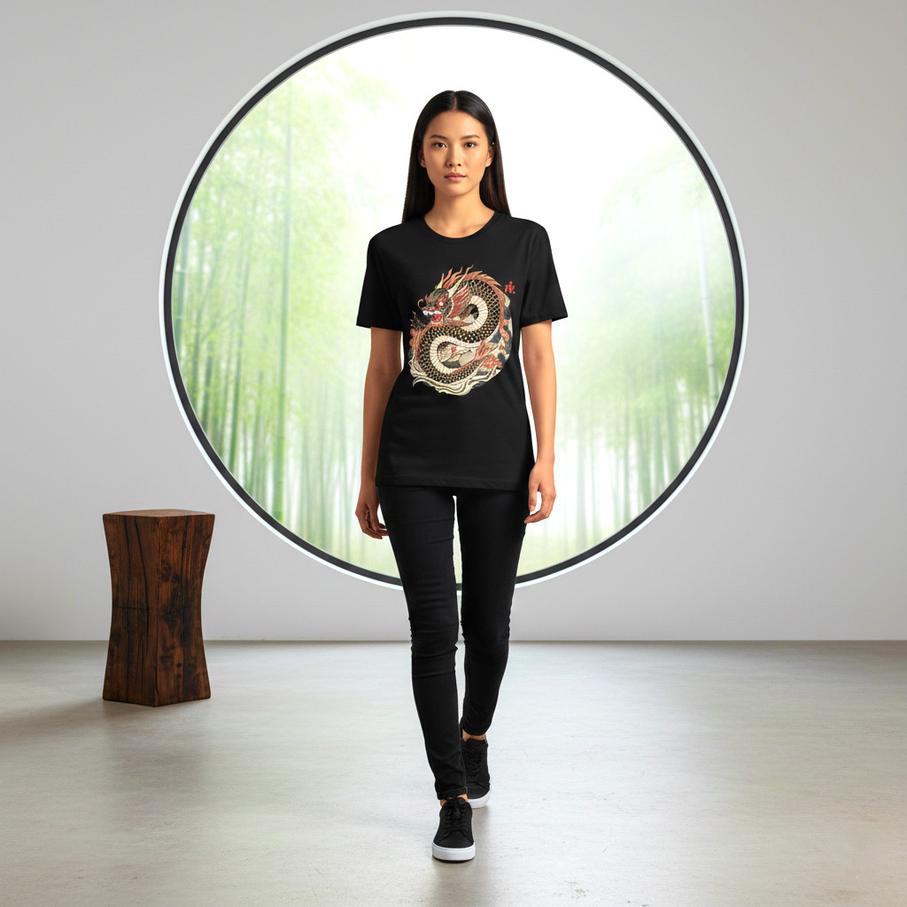
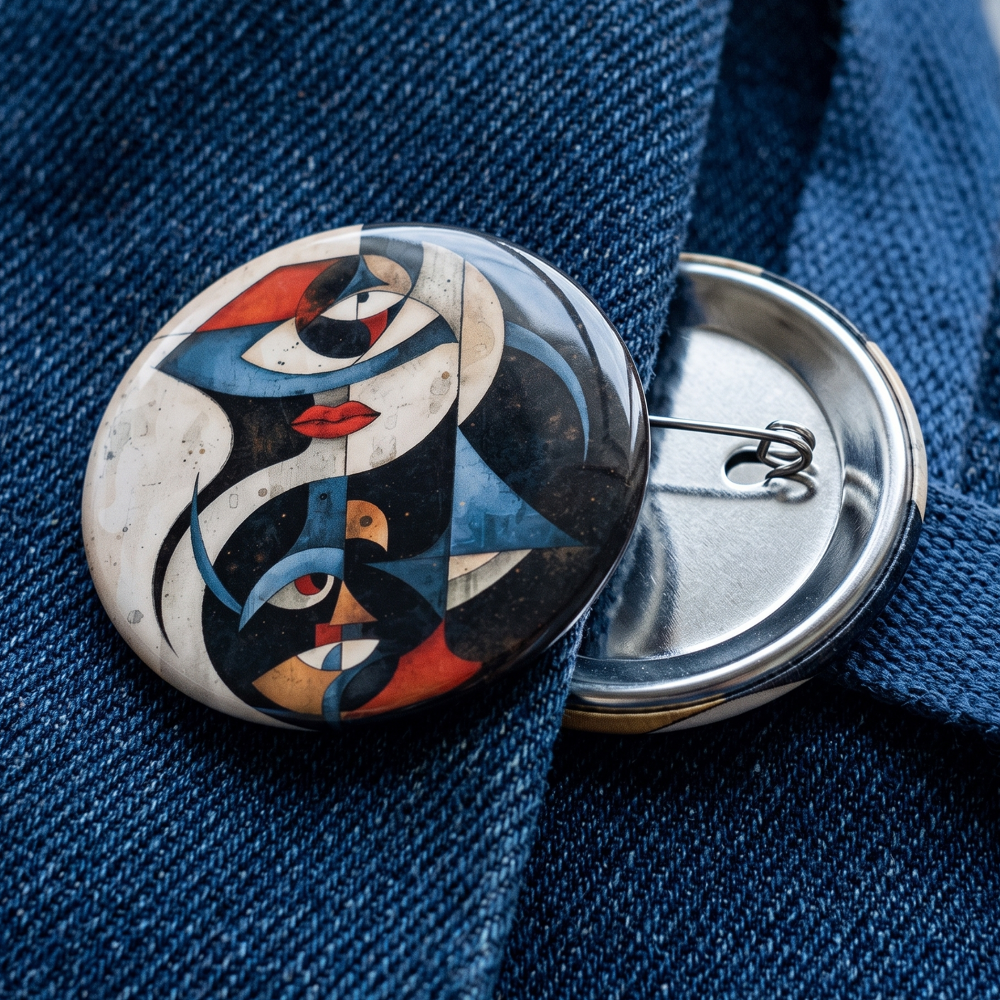

Wear your own mythology
Babul
New T-shirts.
Art with a point of view. Explore graphic tees, heavyweight hoodies, expressive sweatshirts, and Cosmic Pins inspired by stories, symbols, and the wonderfully strange.
wearable art

Find your signal
Art, in every direction.
 01
01Japanese-inspired samurai art
 02
02Cyberpunk samurai streetwear
 03
03Mindful movement in wearable art

04Neo-Traditional tattoo art

05Japanese-inspired tattoo art
 06
06Art with a feline twist
 07
07Expressive art inspired by yoga
 08
08Astrological art for your sign
Shop the product

Featured collection · Neo-Traditional tattoo art
The Ink & Steel Series
Explore the Neo-Traditional Tattoo Collection.
View the collection
Small art, big energy
Cosmic Art Pins
Meet the Cosmic Art Pins: pocket-sized pieces of the BABUL art universe, made to bring a little color wherever you go.
Discover Cosmic PinsThe BABUL universe
Wearable art for every kind of curious.
Welcome to the BABUL Official Shop, your destination for original artist-designed graphic T-shirts, heavyweight streetwear hoodies, expressive sweatshirts, and Cosmic Pins. Explore more than 20 curated collections, from Japanese streetwear and Neo-Traditional tattoo art to cyberpunk bushido, tarot and astrology, mindful movement, and witty visual philosophy. Every piece is made to order on ultra-soft, ring-spun cotton, with high-definition printing built to last.
Read the BABUL story